Verkefni 3 felur í sér að hanna hlut í hönnunarforriti og 3D prenta hlutinn. Hluturinn þarf að vera hannaður þannig að ekki er hægt að fræsa hann.
Hugmynd að hlut - skrifað 5. mars 2020
Ég byrjaði ferlið á því að brainstorma hvað ég skildi hanna, ég hugsaði mér að það væri kannski sniðugt að hanna lítinn borðlampa, mér datt samt enga sniðuga hugmynd að hönnun í hug svo
ég ákvað því að leita á ný mið. Ég byrjaði á því að googla mig áfram, ég skrifaði til að mynd 3D printed object o.s.frv. Ég endaði síðan á því að finna hugmynd sem mér leist mjög vel á en
hönnunina má sjá á eftirfarandi mynd:
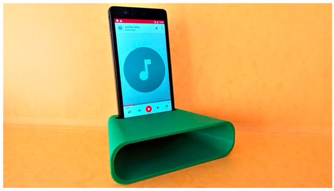
Á myndinni hér að ofan má sjá hlut sem að magnar upp hljóðið frá símanum, ég taldi þetta vera mjög sniðugan hlut til þess að búa til. Hann er ekki of flókinn og ég get notað hann þar sem Ég
hlusta oft bara á símann minn þegar ég hlusta á tónlist heima. Það er ekki hægt að fræsa þennan hlut þar sem vegna gatsins þar sem síminn fer ofaní. Ef gatið væri ekki þá væri mjög auðvelt að
fræsa hlutinn.
Hönnun á hlut í Fusion 360 - skrifað 5. mars 2020
Ég hef ekki mikla reynslu í Fusion 360 svo ég byrjaði í raun að hanna hlutinn vitlaust. Ég byrjaði að búa til kassa sem leit einhvernvegin svona út:
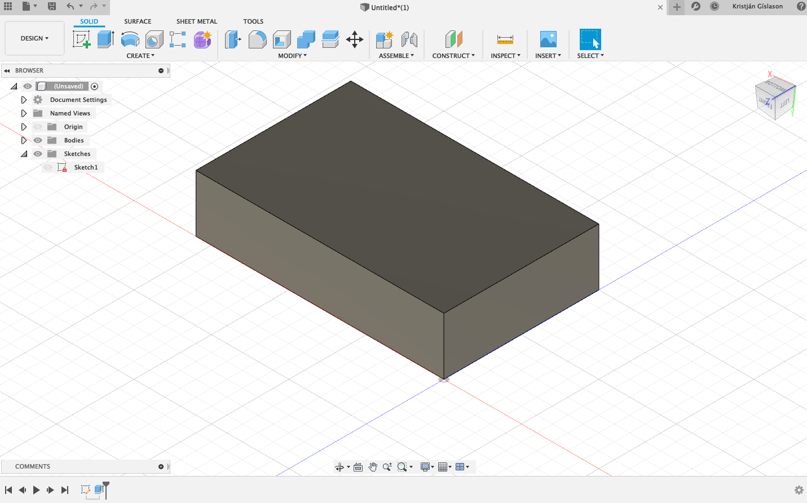
Svo hugsaði mér, hvernig í ósköpunum á ég að láta formið líta út einsog það á að vera með því að byrja með svona kassa. Formið þarf að vera stærra á einum endanum heldur en hinum.
Í tölvuteikningu og framsetningu á mínu fyrsta ári lærði ég það að það er hægt að extrudea tvö sketch saman. Ég horfði á myndbönd á netinu til þess að kynna mér hvernig maður átti að framkvæma
það í Fusion 360 en þetta myndband kom mikið til hjálpar: https://www.youtube.com/watch?v=-Z9ioh2NfwY. Aðferðin sem ég notaði heitir Loft. Ég byrjaði á að gera sketch fyrir framglið hlutsins. Á
eftirfarandi mynd má bæði sjá breid og hæð framhliðar:
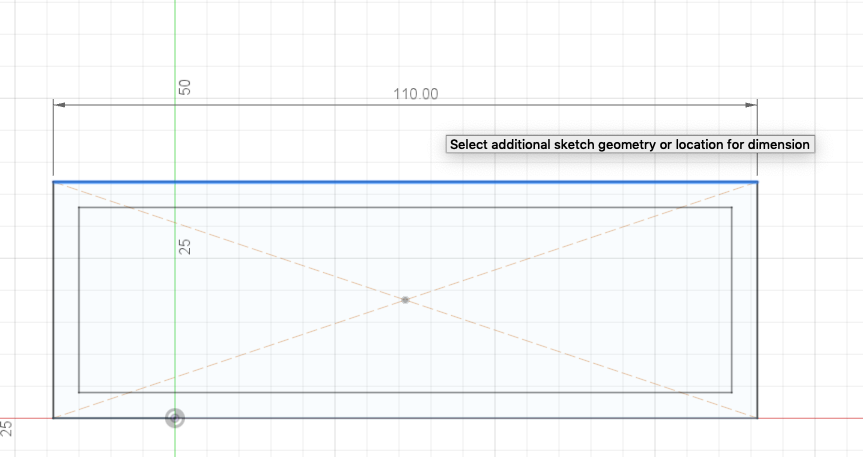
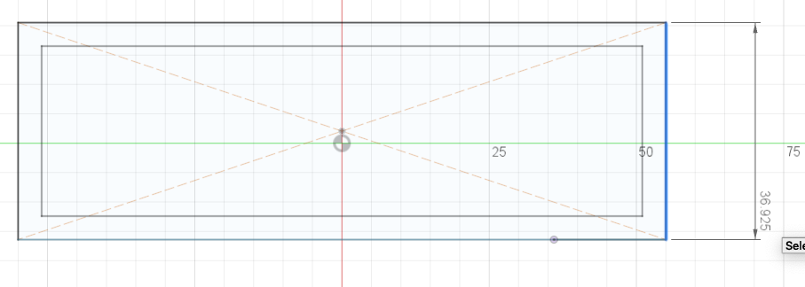
Næst gerði ég sketch fyrir bakhlið hlutsins,lengdir og sketch má sjá á mynd:
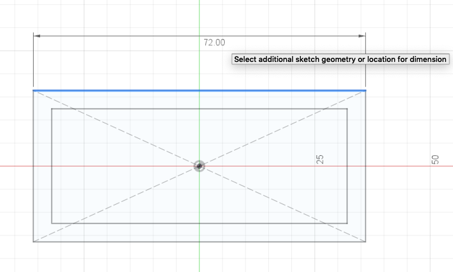
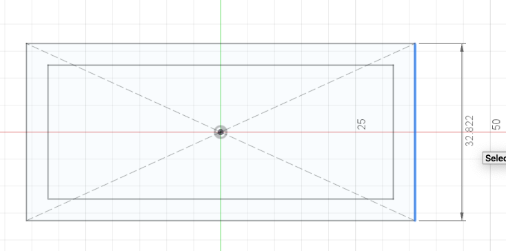
Bæði sketch má síðan sjá á eftirfarandi mynd, taka þarf fram að ég staðsetti sketchin á mismunandi stað í rúminu. Það gerði ég með því að nota offset plane.
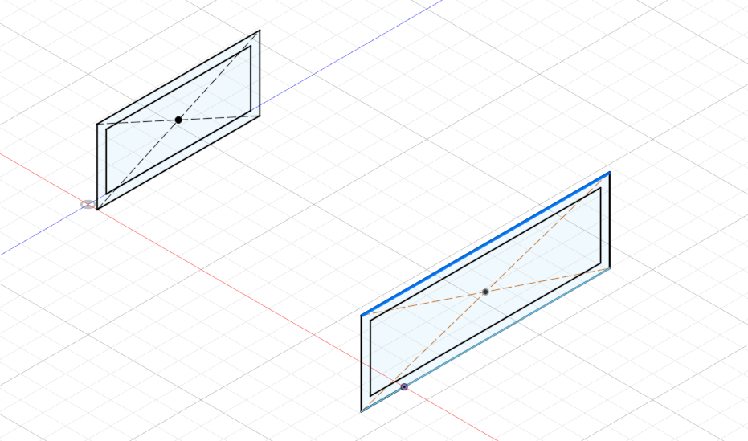
Vegalengdin á milli plana er 140.06 mm. Næst var það síðan að notfæra okkur aðferðina loft í fusion, það má sjá á næstu mynd:
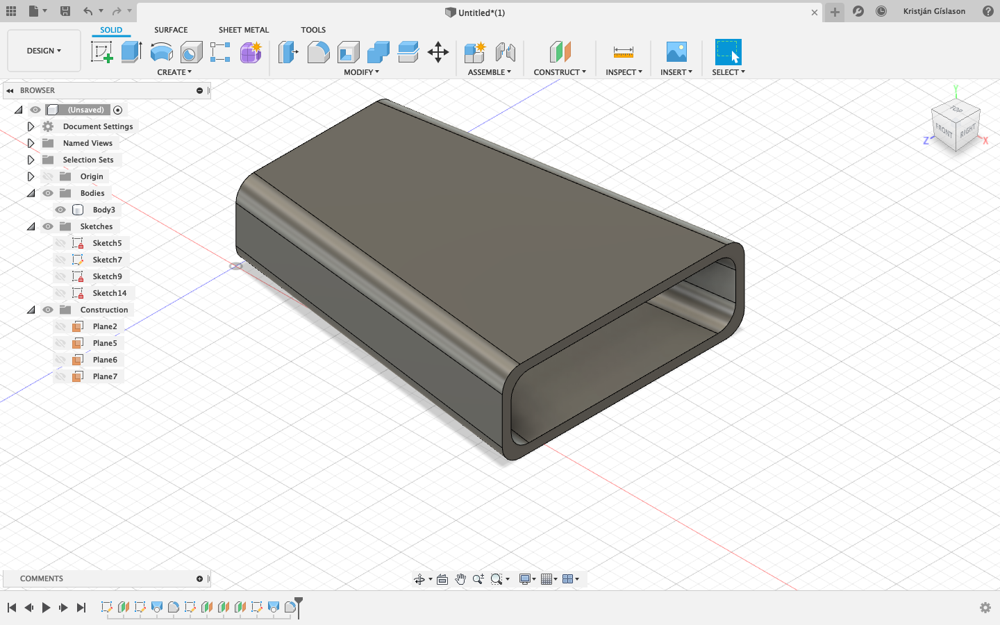
Á myndinni má sjá að búið að tengja saman bæði sketch með body sem nær á milli. Einnig má sjá að búið er bæta við fillet (rúnaða kanta) en radíusinn þar er 8 mm.
Næsta skrefið var svo að búa til einhverskonar gat sem síminn passaði ofan í. Ég notaði offset plane og bjó til plan ofan á hlutnum. Þetta má sjá á næstu myndum:
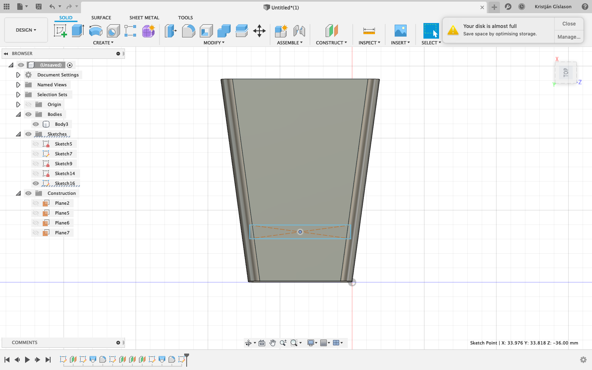
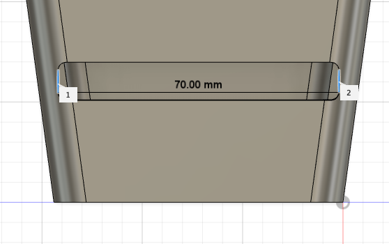
Þarna má sjá að gatið fyrir símann hefur breiddina 7 cm, breiddin á símanum mínum er 6.8 cm svo hann ætti að passa fullkomlega. Lokahönnunina má síðan sjá hér:
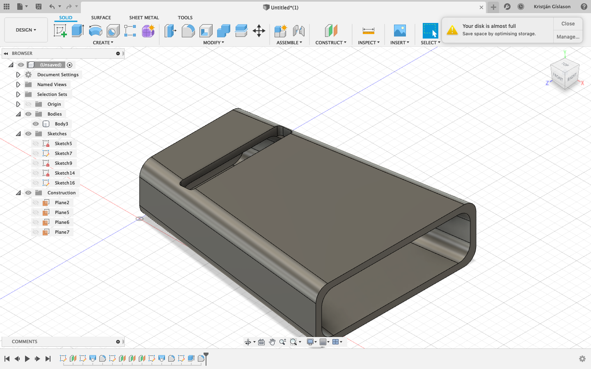
Næsta skref í ferlinu var síðan að exporta skránni í STL skrá. Það gerði ég með því að hægri smella á body í Fusion og gera save as STL. Þá opnaðist eftirfarandi gluggi:
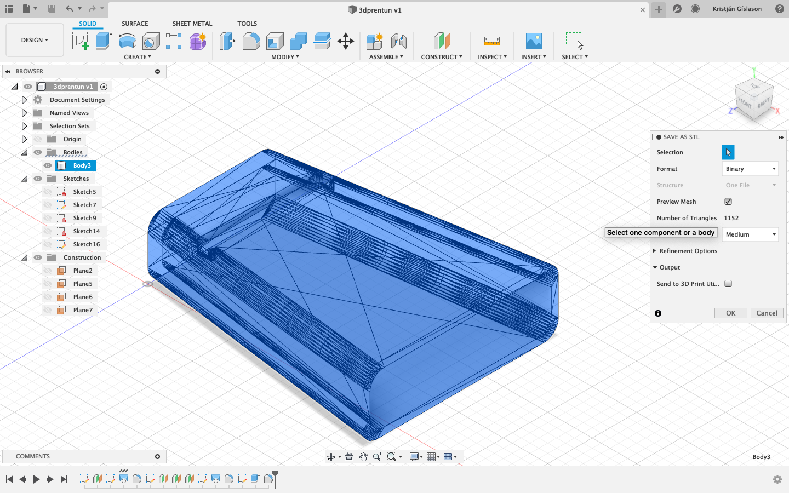
Í þessum glugga hafði ég valmöguleika á að stilla fjölda þríhyrninga í STL skránni en STL skrá les aðeins hlutina útfrá litlum þríhyrningum. Því fleiri þríhyrninga, því lengri tíma tekur
3D prentarann að prenta út hlutinn. Ég ákvað að medium væri alveg nóg fyrir mig þar sem að hluturinn minn er ekkert sérlega flókinn. Næst var það síðan að koma STL skránni yfir í
Ultimaker Cura. Það gerði ég með því að draga STL skránna yfir í Cura. Útkoman var þessi:
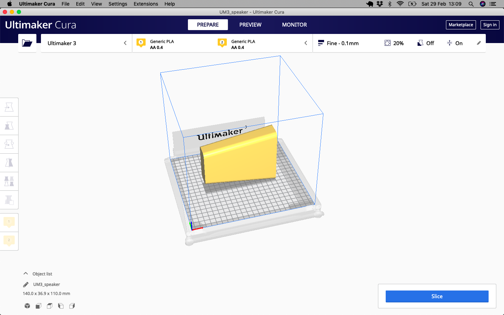
Ultimaker Cura og 3D prentun - skrifað 6. mars 2020
Ég stillti hlutnum þannig að minni hliðin stóð niður, þetta gerði ég til þess að ég þurfti ekki að búa til mikið af undirstöðum, fyrst lét ég hann snúa flatann en þá tók
9 klukkustundur fyrir 3D prentarann að klára. Eftir að ég síðan breytti honum þurfti aðeins 5 klukkustundir, það þurfti 98 gr af efni til þess að prenta hann. Stillingarnar sem ég gerði í
Cura má síðan sjá hér að neðan:
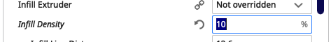
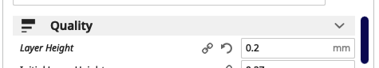
 Allar aðrar stillingar voru eins. Síðan færði ég STL fileinn yfir á usb kubb og usb kubburinn síðan settur í Ultimaker Extended í fablab. Myndir af þessu
og upphafi prentunar má sjá hér að neðan:
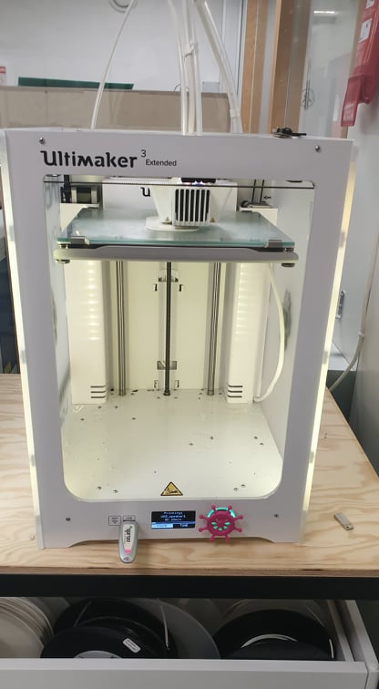
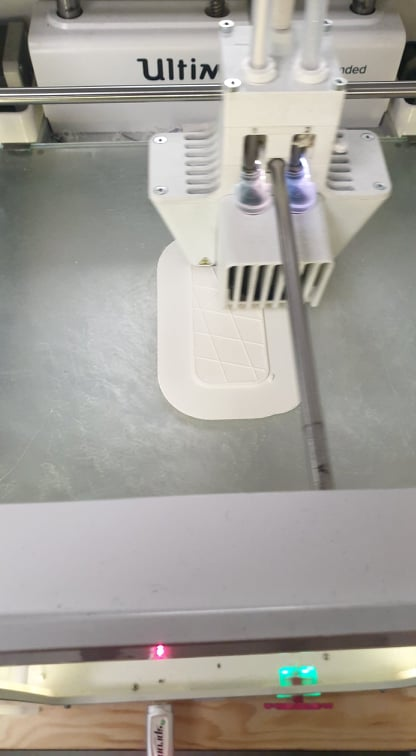
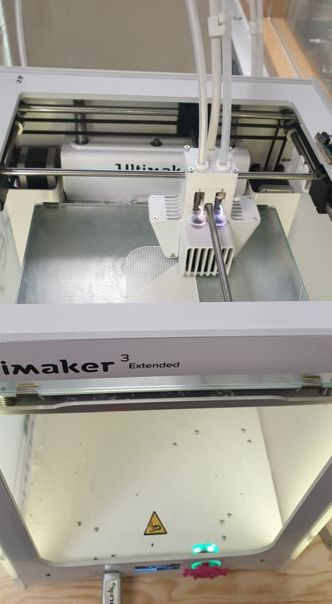
Hér að neðan má síðan sjá hann í heilu lagi, en þarna á eftir að taka undirstöðurnar í burtu, undirstöðurnar eru staðsettar í gatinu fyrir símann og
á botni hlutsins:
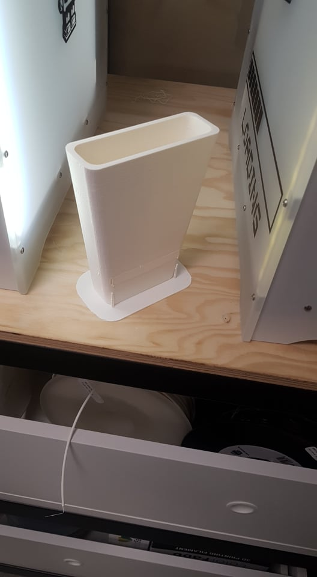
Allar aðrar stillingar voru eins. Síðan færði ég STL fileinn yfir á usb kubb og usb kubburinn síðan settur í Ultimaker Extended í fablab. Myndir af þessu
og upphafi prentunar má sjá hér að neðan:
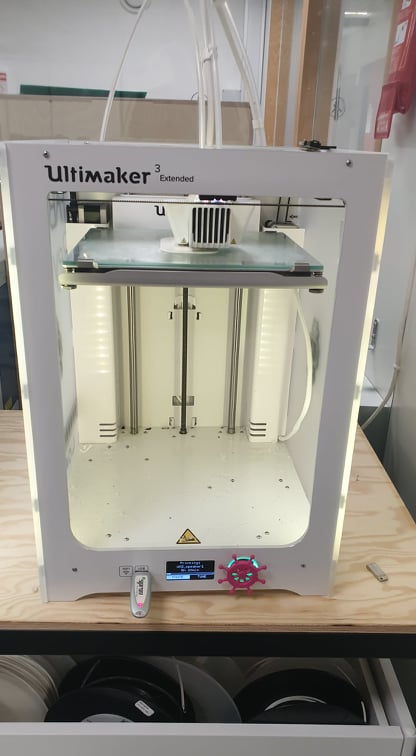
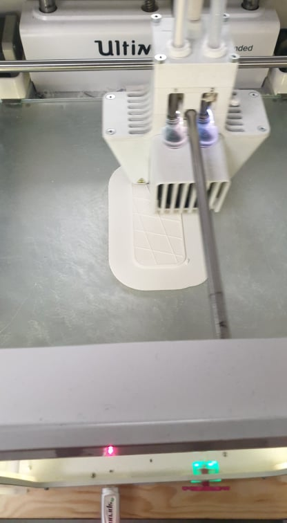
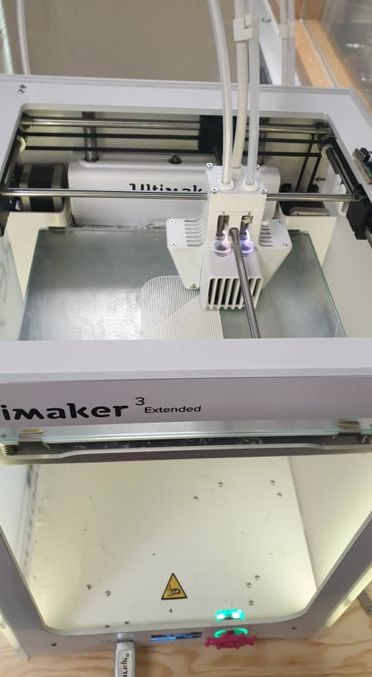
Hér að neðan má síðan sjá hann í heilu lagi, en þarna á eftir að taka undirstöðurnar í burtu, undirstöðurnar eru staðsettar í gatinu fyrir símann og
á botni hlutsins:
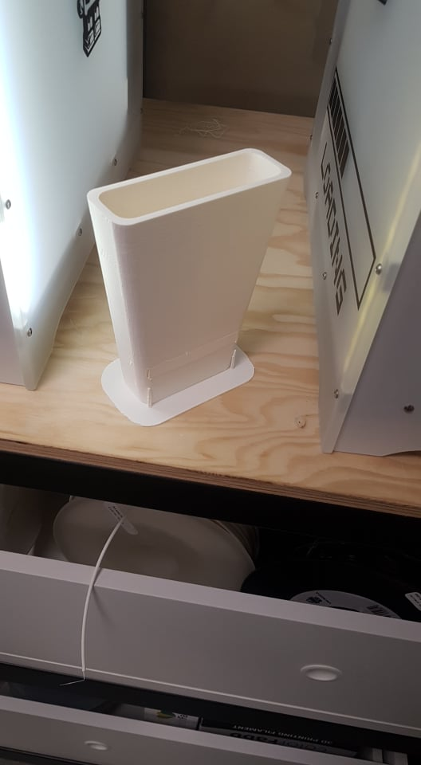
Linkar sem ég notaði í gegnum verkefnið
https://chinaphonesandroid5.blogspot.com/2019_06_06_archive.html
https://www.youtube.com/watch?v=-Z9ioh2NfwY
https://www.youtube.com/watch?v=wxbjlHowd2Q
https://www.youtube.com/watch?v=BJjTwOnMQkY&feature=youtu.be
https://www.youtube.com/watch?v=JP5UDeBH4y4
https://vimeopro.com/academany/fab-2019/video/318844907